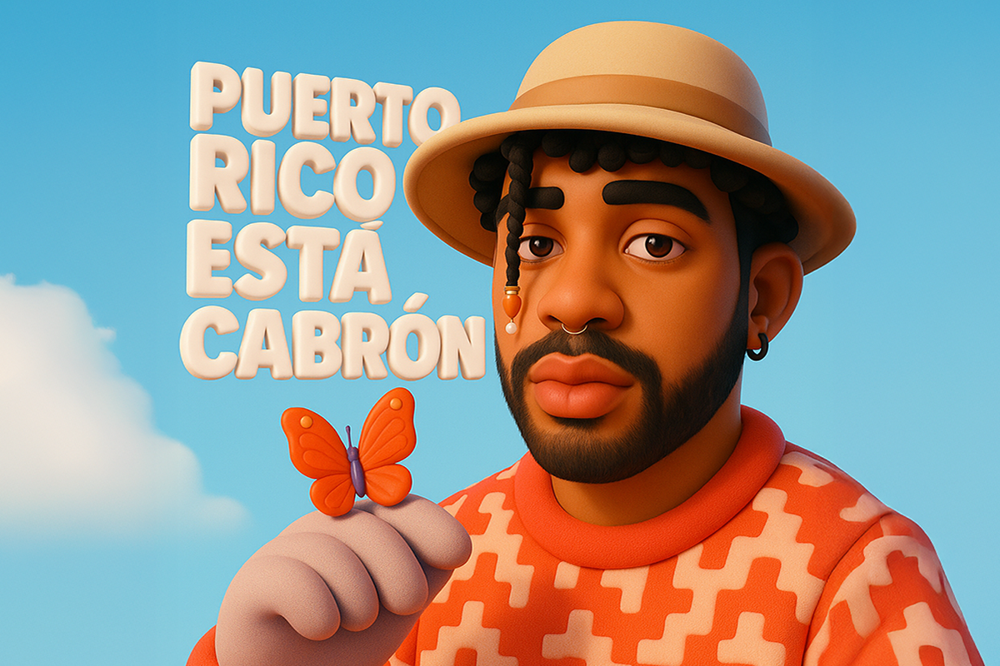
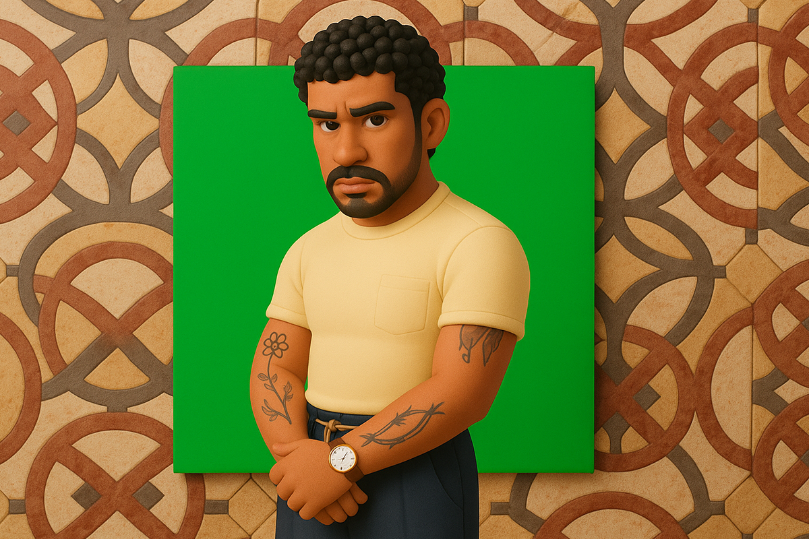

Bad Bunny y su oda a Puerto Rico
El orgullo boricua como manifiesto y la transformación ante el ojo público
El orgullo boricua como manifiesto y la transformación ante el ojo público

Del discurso a la música, Bad Bunny se ha vuelto en un referente de la cultura puertorriqueña pero no solo desde su innegable popularidad, sino que utilizando su influencia para entregar un mensaje claro desde su posición de privilegio en una industria musical que no puede negar los logros del artista.
Muchas pueden ser tus opiniones con respecto a Bad Bunny: que hace música sin sustancia, que sus letras son vacías, que su voz no es la mejor y que poco y nada se entiende cuando se le escucha (en serio, hasta el día de hoy las mismas críticas del público se repiten en cualquier red social). Sin embargo, algo cambió con el lanzamiento de su último álbum “DeBí TiRaR MáS FOToS” (2025).
Pero antes de hablar de este cambio en la historia musical de Benito Martínez, nombre real de Bad Bunny, sería bueno revisar cuál es su pasado musical y cómo cimentó su carrera hasta llegar a ser uno de los cantantes más bullados del momento.
Benito tiene sus raíces musicales en el reggaetón antiguo y la salsa, el primero siendo uno de los géneros más influyentes que han salido de Puerto Rico. A los 14 años comenzó a publicar sus primeros trabajos en la plataforma SoundCloud, donde se mantuvo hasta el 2016. Ese mismo año fue firmó su primer contrato discográfico. Su single “Soy peor” lo llevó a estar en las primeras listas musicales estadounidenses, comenzando oficialmente su maratónica carrera en la industria.
Pero claro, “Soy peor” fue solo una pequeña demostración del gran éxito que se encontraba a la vuelta de la esquina.
El año siguiente realizó una colaboración con la cantante colombiana Karol G y la canción “Ahora Me Llama”, con quien dobló los tremendos números que ya había conseguido con su primer hit y con la que recibió las primeras flores de la crítica.
Es que definitivamente fue el 2017 el año del despegue de Bad Bunny. Anuel AA, Becky G, Arcángel, J Balvin, Ozuna y otros grandes de la música urbana contribuyeron al éxito del cantante después de que lo hicieran parte de varios singles, logrando que todas las miradas se posaran en el puertorriqueño. Ahí fue cuando llegó “Tu no meter cabra”, canción solista del Conejo Malo que lo terminó posicionando como una promesa del género.
A pesar de que los primeros flashes de fama comenzaron el 2017, es innegable que su popularidad mundial llegó el 2018 con “i like it!”, colaboración junto a Cardi B con la que incluso fue nominado al Grammy (a la fecha, ya cuenta con 10 nominaciones y 3 triunfos). Esa canción igualmente fue la que llegó al primer lugar del Billboard HOT 100. El mismo año colabora con Drake y más tarde con Jennifer López. Benito ya se estaba codeando con los grandes artistas norteamericanos.
Llegaron los álbumes extendidos en solitario y más colaboraciones. A Coachella, late shows y una invitación para participar en el Super Bowl le siguieron sus álbumes más populares y giras mundiales. Es más, con su disco “YHLQMDLG” (2020) se transformó ese año en el artista (y en el álbum) más escuchado de Spotify, siendo el primer cantante de habla no inglesa en lograr ese título. Ese año también fue nombrado “la estrella pop más grande del mundo” por The Guardian.
Luego llegaron los exitazos “Un verano sin ti” (2022) y “Nadie sabe lo que va a pasar mañana” (2023), álbumes que también sonaron un montón en todos lados. En estos discos fue que pudimos presenciar de mejor forma los cambios musicales que Benito quería desplegar en su trabajo. Con “Un verano sin ti” ya no se trataba solo de reggaetón y trap, sino de incorporar géneros como el merengue, el dancehall y el synth pop, colaborando con artistas que escapaban del círculo urbano, abriendo así sus horizontes musicales.
No fue hasta “DeBí TiRaR MáS FOToS” que Bad Bunny comenzó a llamar la atención de un público nostálgico y conocedor de la música latina. Varios videos se hicieron virales, sobre todo de puertorriqueños y otros latinos, reaccionando al nuevo disco del cantante.
Es que Benito no escatimó y le dio una pincelada a sus raíces y a sus grandes inspiraciones. El cantante tiene un bagaje amplio en cuanto a cultura musical, así que no solo quiso dejar contentos a sus seguidores de siempre. Aquellos que están con él por su carrera en el reggaetón, si no también a quienes se podían sentir identificados con la vida del puertorriqueño, con la cotidianeidad del migrante latino en Estados Unidos y con quienes crecimos escuchando música caribeña en las fiestas.
Ya no se trata solo del reggaetón, tampoco de los miles de millones de escuchas, sino que nos enfrentábamos a una oda a su país, a un abrazo a su pueblo y al valor real que se encuentra en las raíces. Es más, todas las colaboraciones de este trabajo son de parte de artistas puertorriqueños.
Basta con escuchar el segundo single, antes del lanzamiento del disco a inicios de este año. “PIToRRO DE COCO” fue una apuesta, pues escapa de los estilos más reconocidos del cantante. Aquí ya podíamos notar que nos estábamos encontrando con otra cara de Bad Bunny, una más personal, más calma y cubierta con ritmos de nicho. De hecho, este estilo llamado música jíbara es típico de Puerto Rico y, particularmente, esta canción está sampleando un clásico del género interpretado por Chuíto El De Bayamón en 1972.
Lo mismo pasa con “NUEVAYoL” (canción introductoria del álbum) o con “BAILE INoLVIDABLE”. La primera, sampleando la canción de 1975 “Un Verano en Nueva York” pero teniendo al dembow como género principal y la segunda, “BAILE INoLVIDABLE”, es derechamente una salsa que, a pesar de no ser un estilo nacido en Puerto Rico, sí es un género muy reconocido y con varios exponentes en el país boricua, como Héctor Lavoe o Marc Anthony. Fue la primera salsa en la historia en llegar al número 1 en la plataforma Apple Music EE. UU.

Homenajes varios son los que podemos encontrar en este álbum. Otro importante sería “LO QUE LE PASÓ A HAWAii”, un testamento claro sobre las luchas del pueblo puertorriqueño para continuar su legado a pesar del histórico peso estadounidense. Una canción de protesta con un halo de jíbaro clásico. Si hablamos desde lo musical latino histórico, también rescato “CAFé CON RON” y “LA MuDANZA”.
Las plumas de la crítica especializada alabaron este trabajo, sus fans, también. En general, se centraban en las letras, en su trabajo vocal, interpretación, producción y en el despliegue de géneros latinos interpretados con músicos reales. Esto sin mencionar la identidad boricua retratada en sus vídeos musicales y en el uso del sapo concho, endémico de Puerto Rico y que actualmente se encuentra en peligro de extinción.
Un par de meses después empezó a llegar a otros públicos gracias a su presentación en el Tiny Desk del canal de NPR Music en YouTube, importante hito para cualquier artista actual.
Si quieres conocer otra faceta del Conejo Malo, “DeBí TiRaR MáS FOToS” definitivamente podría ser un interesante acercamiento a su trabajo. ¿Ya lo escuchaste?
 Cultura
CulturaSé que suena raro hablar de calor extremo mientras en Chile todos están buscando la parka más gruesa del clóset.
 Cultura
CulturaEl hecho de que estemos entrando al mes de julio no se puede creer. Pero lo que tampoco se puede creer es la cantidad de artistas que han…
 Cultura
CulturaCuando hablamos de trabajos clásicos de la música chilena, siempre se nombran los discos de Violeta Parra, Víctor Jara, Los Jaivas o…